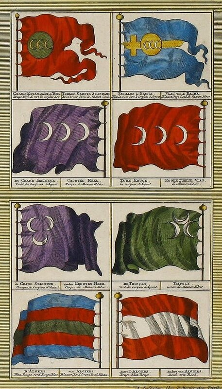
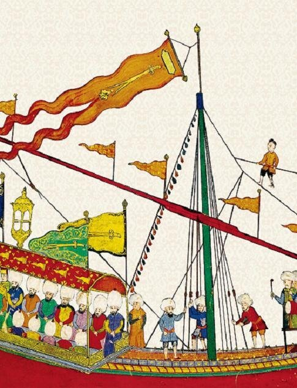

Продолжим знакомиться с переводом манускрипта Ахмеда Хафуза, отражающего турецкий взгляд на осаду Родоса в 1522 году.
«Перед отходом флота Визир-Азим (Великий визир) попросил еще одной аудиенции у славного Султана; он просил у него разрешения доверить этим воинам военные знамена, на которых золотыми буквами написано священное имя пророка, знамена, которые, по милости и с благословения аллаха были победоносно пронесены через страны и царства. Великодушный султан, приняв это прошение, воздел руки к всемогущему аллаху и испросил у него согласия на захват Родоса. Эта молитва. не только от благоверных на земле, но и ангелов на небе была услышана.»

"После окончания молитвы Паша, главнокомандующий войсками, сопровождаемый всеми визирями, спустился на причал, где его уже ожидала большая галера. Вместе с флотом, поднявшим паруса, двигаясь величаво и царственно, галера прошла вдоль набережных, заполненных неисчислимыми массами народа."

Взято из книги Кятиба Челеби, изданной в 2008 году в Анкаре Идрисом Бостаном .
"Когда она проходила перед Сералем, благородный Паша, увидев в одном из его окон славного Султана, отдал приказ произвести выстрел из орудия своего корабля и все воинство в один голос воскликнуло: «Аллаху акбар!» и выстрелы салюта прогремели с борта каждого корабля, проходящего перед своим господином. Звук выстрелов был оглушающим, дым окутал все корабли флота до самого горизонта. Находящиеся на кораблях храбрые воины обсуждали между собой свои будущие подвиги.»
«На следующий день доблестный флот Империи достиг Галлиполи, порта Румелии, где находился несколько дней. Воины Ислама во главе со своим Пашой совершали жертвоприношения и раздавали милостыню беднякам, которые, исполненные радости, благословляли их. Затем они поклонялись гробнице блаженного Язиди-Оглу Мехмед Эффенди, где проливали слезы радости и благодарности. После этого якоря были подняты и флот направился к проливу Килид-Бахар (Дарданеллы –g._g.). Крепости на берегу и корабли обменялись салютами, такими громкими, что окружающее население испугалось этого шума и вызванного выстрелами сотрясения земли и воздуха. После короткой остановки, во время которой были совершены жертвоприношения и вознесены молитвы, флот в строгом порядке, пройдя Богаз-Хиссар (крепость на азиатском берегу при входе в Дарданеллы –g._g.), направился в Белое (Средиземное –g._g.) море.»
«В то время, как Паша возносил молитвы к Аллаху всемогущему прося его внушить страх неверным из Френкистана (Европы –g._g.), проводились грандиозные работы по подготовке кораблей и солдат для безопасного перехода к Родосу. Следуя приказу высокочтимого султана, начиная с этого места руководство передвижением флота было передано Куртоглу Муслихеддину, опытному флотоводцу и беспощадному врагу неверных, кровь которых он пил как вино; он хорошо знал Белое море еще с тех пор, когда блаженной памяти султан Селим послал его против Нураллы чтобы захватить Египет, откуда он вернулся с большим количеством пленных и богатой добычей. Учитывая такой опыт, победоносный султан Сулейман призвал своего капудан-пашу, чтобы поручить ему руководство движением флота, и Куртоглу, который всегда подчинялся приказу своего Падишаха, пал на колени перед блистательным троном своего господина и заверил султана, что он настолько хорошо знает Белое море, все его порты, заливы и проливы настолько хорошо ему известны, что он найдет их даже темной ночью. Удовлетворенный таким ответом, великий монарх подарил ему богатый халат и поручил возглавить движение флота. Когда флот прибыл в Каз-Даги и остановился в устье реки, Куртоглу поцеловал руку благородного Паши и сказал ему: «Отныне мы уже в Белом море; может случиться, что мы встретимся с флотом неверных. Пожалуйста, отдайте приказ, чтобы на каждом корабле флота Империи были приняты меры по его защите и по удвоенному наблюдению. Это крайне необходимо. Паша отдал соответствующие распоряжения.»
«Подойдя к острову Сакиз (Хиос –g._g.), где была сделана короткая остановка, флот Империи разделился на две части, одна из которых под командованием храбрейшего Куртоглу направилась в Хиосский пролив, в то время как другие пошли вокруг острова, имея общее направление на Родос.»